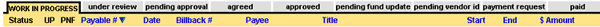
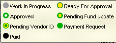

Blacksmith Applications, www.blacksmithapps.com
The Billbacks Scorecard gives you an overview of the numbers and types of billbacks, and lets you access billback information.
When you click on a billback status (work in progress, under review, pending approval etc.) from the Home page Scorecard section, the Scorecard page for billbacks displays.
The Billbacks Scorecard page displays the listing of billbacks for the tab you selected with all other billback lists by status available by simply clicking the other tabs:

Remember that you can sort by any column header with blue text, and that you can control the sort order, by clicking the column title. You can display the billbacks listing by the number of total pages of billbacks using the page number links at the bottom. For the selected billbacks tab, the total number of billback of that type is displays at the bottom right.
The status of the items displays in the left-most column: "hover" over any status, and an image pops up showing you the statuses:

You may see a "lock" icon if another user is modifying the billback; if you hover over the lock icon, the name of the person accessing the billback displays.
Next to the Status are two columns that may contain a checkmark or an "x": UP, and PNF. UP means Unknown Payee, and PNF means Program Not Found by the system. If the payee is an unknown distributor, unknown operator or unknown broker, the system considers it UP. The system will mark as PNF any billback that contains a program that is not in the system.
A green checkmark means the billback payee or program is valid, and a red "x" means the billback payee or program is not valid.
If the billback Date is highlighted in red, it means that the billback is in danger of being deducted according to your administrative settings for billback number of days.
The start and end dates indicate the period for which the billback is claiming payment, and the $ Amount is the amount being claimed for the billback.
You can "drill down" to display billback details by clicking the Payable # link.
With appropriate permissions, you can use the links across the top right of the billbacks scorecard page to [search billback], [create billback], [create auto billback], and view billback related messages in your [inbox].